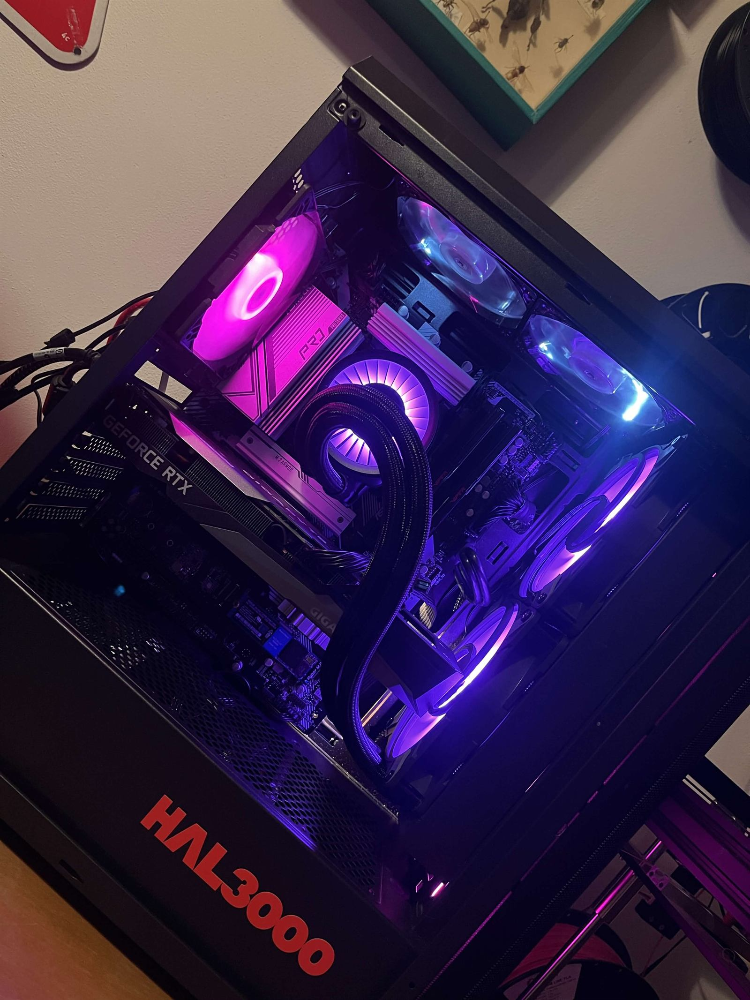

Web Start
od 9 900 Kč
Jednostránkový web pro firmu nebo živnostníka, který potřebuje rychle působit důvěryhodně online.
- Úvod, služby, kontakt a mapa
- Mobilní verze a rychlé načítání
- Formulář a nasazení na doménu
Weby, IT servis a hardware
Stavím rychlé weby pro lokální firmy a živnostníky. Zároveň řeším opravy počítačů, notebooků, upgrady, stavby PC a praktickou IT pomoc v Kladně, okolí i po domluvě online.

Nabídka
Weby jsou hlavní růstový směr Cingy.Tech, protože se dají rychle škálovat pro lokální firmy. IT servis a hardware ale zůstává plnohodnotná služba pro lidi, kteří potřebují opravit, zrychlit nebo správně nastavit techniku.
Cílem je praktický výsledek: web, který přivádí poptávky, nebo počítač, který se zase dá spolehlivě používat.
Webové balíčky
Weby jsou postavené tak, aby šly rychle dodat a zároveň působily důvěryhodně. U servisu a hardwaru cenu domlouvám podle konkrétní diagnostiky, zařízení a rozsahu práce.
od 9 900 Kč
Jednostránkový web pro firmu nebo živnostníka, který potřebuje rychle působit důvěryhodně online.
od 14 900 Kč
Výměna starého, pomalého nebo nepřehledného webu za moderní prezentaci připravenou pro zákazníky.
od 18 900 Kč
Vícestránkový web pro firmu, která potřebuje představit služby, reference a získávat poptávky.
Kdy napsat
Typicky řeším lokální firmy bez pořádného webu, starší weby po restartu, pomalé notebooky, nestabilní počítače, upgrade komponent a nové sestavy podle rozpočtu.
Zákazník vás najde na mapách nebo přes doporučení, ale nemá kde rychle zjistit služby, cenu a kontakt.
Zařízení je pomalé, hlučné, přehřívá se, padá, nechce startovat nebo potřebuje čistou instalaci.
Když starší zařízení brzdí práce nebo chcete novou sestavu, pomůžu vybrat řešení podle účelu.
Jak to probíhá
U webu stačí obor, služby, lokalita a kontakt. U servisu popište zařízení, závadu a co se změnilo.
U webu připravím strukturu a první verzi. U techniky doporučím diagnostiku, opravu, upgrade nebo jinou variantu.
Web spustím na doméně. Opravený nebo upgradovaný počítač otestuju a shrnu, co bylo hotové.
Ukázky webů
Portfolio budu postupně doplňovat o další klientské weby. Aktuálně ukazuji první veřejnou realizaci, aby bylo jasné, jak může vypadat čistá prezentace pro lokální projekt. Náhled otevírá živý web.
Realizace

Web pro fotbalový klub s přehlednou prezentací, klubovými informacemi a jednoduchou strukturou pro návštěvníky z mobilu i počítače.
Důvěra
Cingy.Tech provozuje Kryštof Cingálek, IČO: 29612071. Komunikujete přímo s člověkem, který web navrhne a u techniky vysvětlí, co dává smysl opravit nebo upgradovat.
Než začne práce, domluvíme rozsah, cenu a co přesně má být hotové u webu, opravy nebo upgradu.
Zobrazit webové cenyMenší weby mířím dodat do 7 dnů od podkladů. U servisu nejdřív řeším příčinu a reálný další krok.
Domluvit termínPo spuštění můžu web dál upravovat. U techniky pomůžu s nastavením, přenosem dat nebo dalším upgradem.
Všechny služby